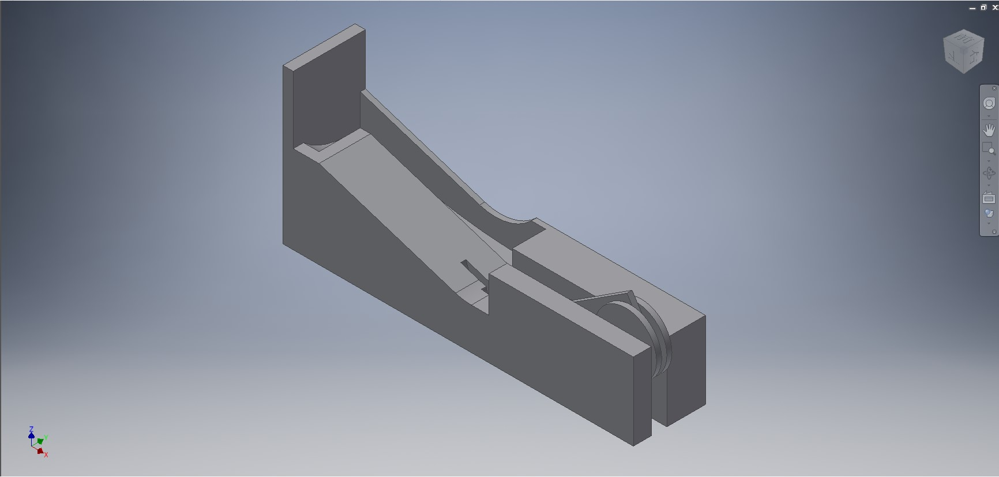
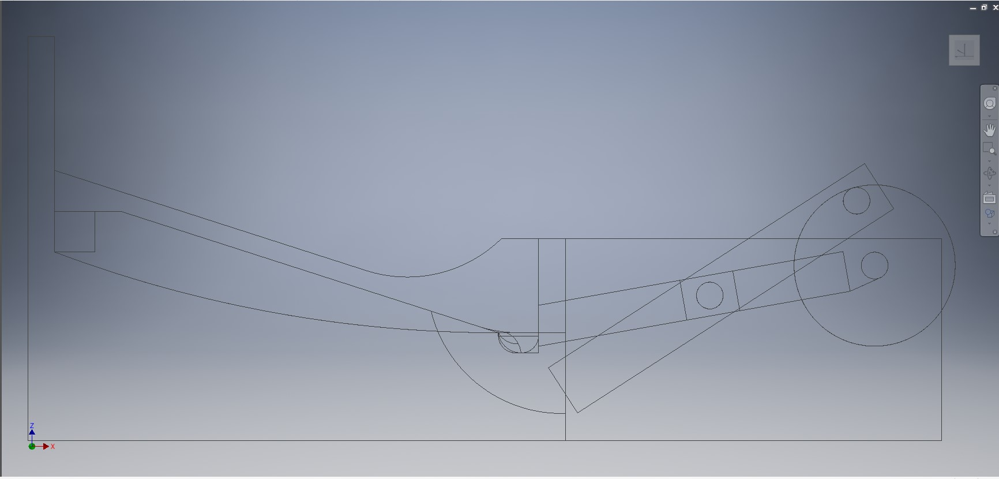
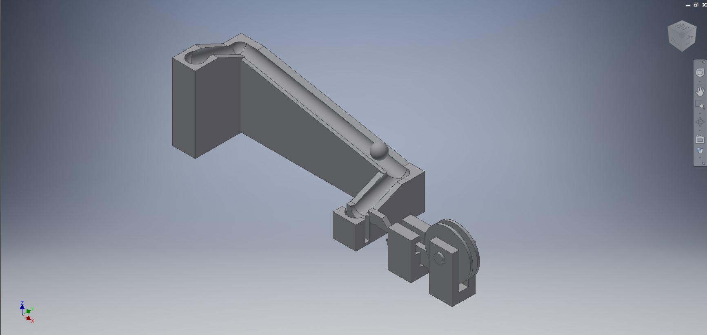
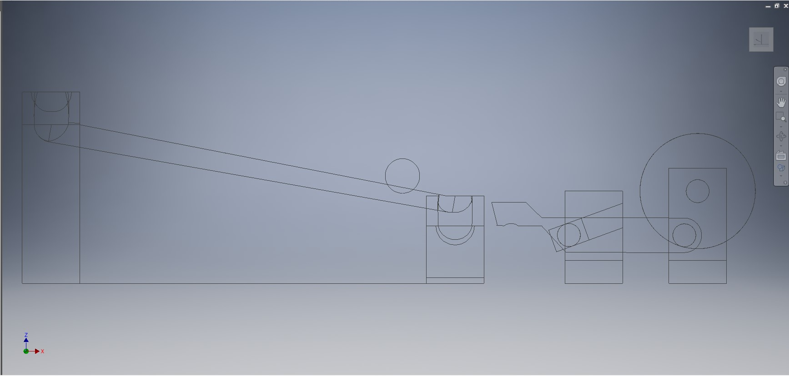
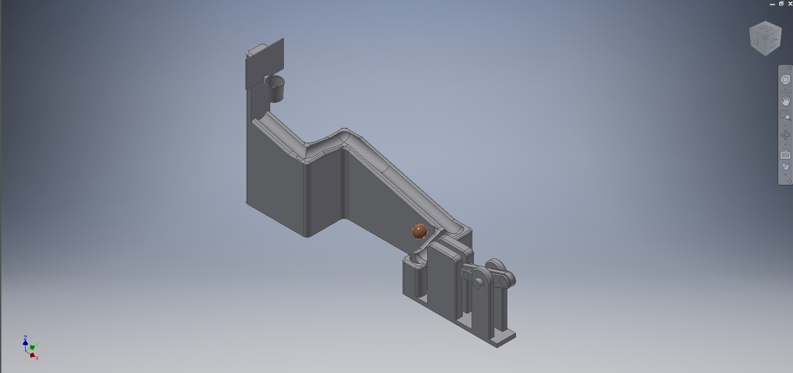
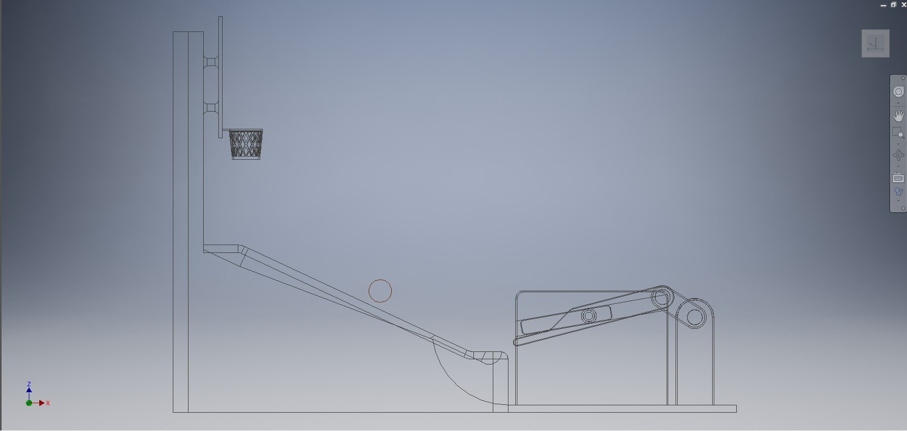
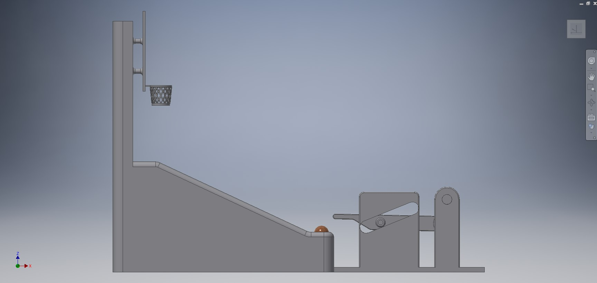

Stage2-ag12 期中報告
組長:40823152
組員:40823110、40823125、40823153
產品目標
主題:籃球機 二代
動機:
第一次小組產品的籃球機只能自己轉動無法控制，所以二代的籃球機目標增加案件控制轉動。
製作規劃:
w5:確認主題，工作分配
w6:尋找lua程式與coppeliaSim 文章，並且使用lua程式控制軸在coppeliaSim裡模擬，籃球機外觀修整。
w7:完成按鍵控制程式與模擬，籃球機外觀修整。
w8:除錯與修整，完成簡報與pdf
w9:報告
Lua control speed
keyboard control
W5


W6

無框版

有框版

W7

CoppeliaSim v-rep 連桿運動問題
一開始在CoppeliaSim上模擬發現模型無法順利地運轉
CoppeliaSim v-rep 連桿運動問題 解決
後來才發現原來是尺寸的問題
由於coppliasim對與尺寸可能無法到inventor那麼精準所以要預留空隙,才能順利運轉
W8

在協同時因為組員們的倉儲版本不同導致無法推送

最後我們只好將版本不同的倉儲刪掉重新協同